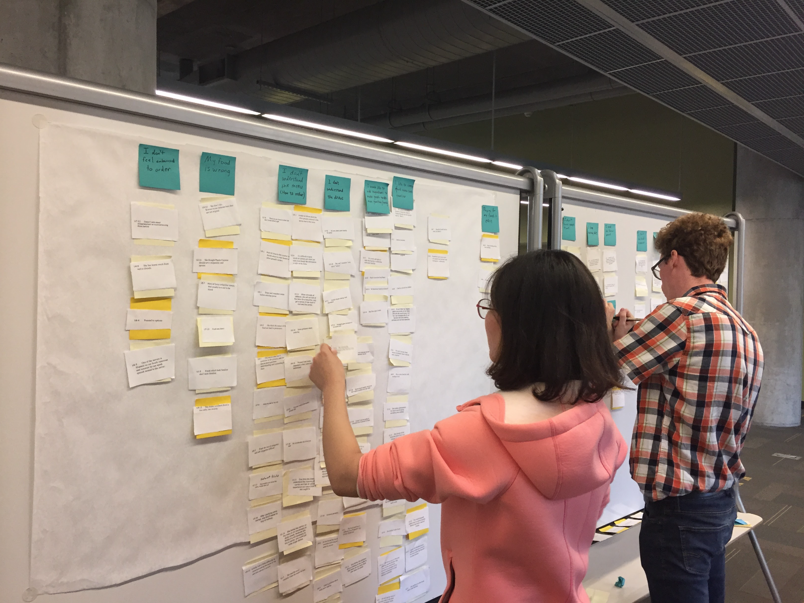
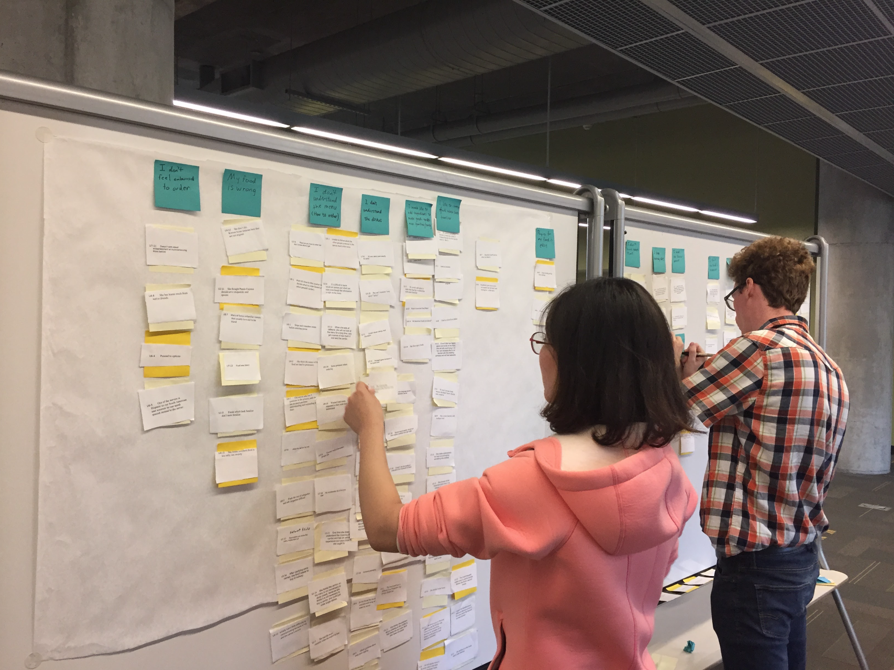
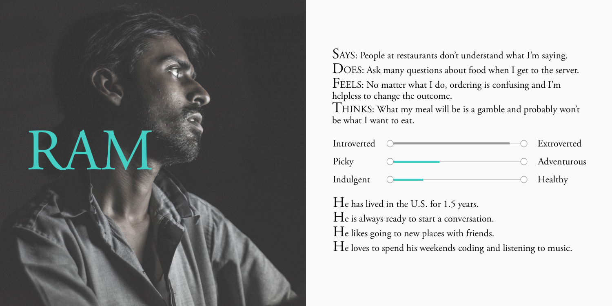
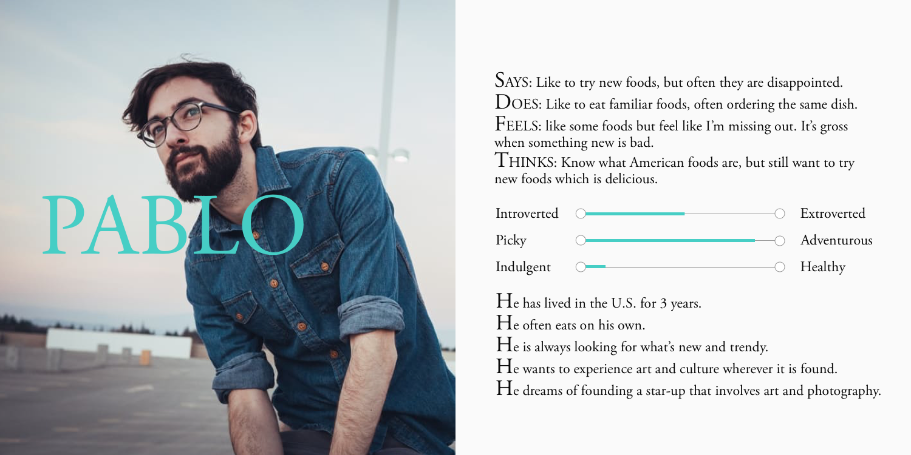
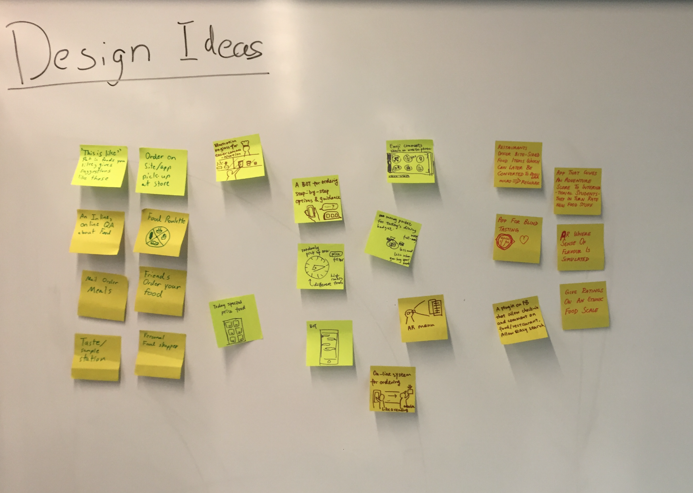
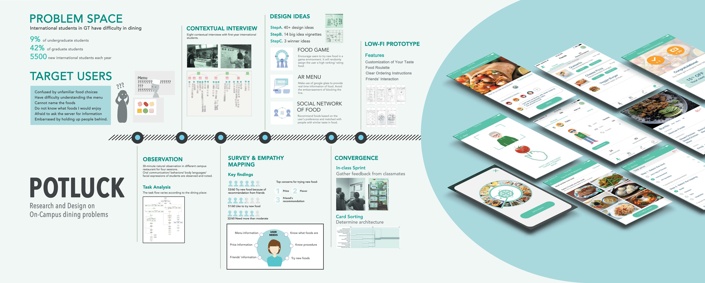

1 OVERVIEW
Problem Space
- Have you ever tried to order some unfamiliar foods at restaurants but found it awful?
- Have you ever listened carefully to the server's introduction to a special dish but still be confused about the taste?
- Have you ever ordered a famialiar dish but found it tastes completely different compared to your memory?
- Or have you ever found it difficult to make a choice facing so many choices? etc.
We are trying to help international students understand the process of deciding and ordering foods at the on-campus restaurants. Also, help them fight food neophobia and increase their willingness to try out new and novel foods based on their dietary restriction, preference and their friends’ recommendation.

Target User
Our target users are international students who are:
- English is a 2nd+ language
- Unfamiliar with American food choices
- New to America (less than one year)
- Wish to avoid public embarrassment
- Would like to try new foods

2 RESEARCH

2.1 Observation
For better understand the problem area we did four 30-minute natural observations in different campus restaurants, observing international students': oral communication with the server, body language, facial expressions, etc.
Through the observation, we somewhat confirmed our problem area. However, what are reasons behind their behaviors?
2.2 Task Analysis & 2.3 Contexual Interview
To get the key insights we decided to conduct task analysis (to understand the specific steps of ordering therefore better prepare for the interviews) and contexual interviews.
The task analysis is shown in the left diagram. It varies according to the dining place.
Then we did 9 contexual interviews and post session interviews, wrote user profiles & affinity notes used for affinity mapping to get the insights.
2.4 Affinity Mapping
The pictures below shows the process of affinity mapping. And finally we found that:
- People prefer familiar flavor but at the same time is open-minded to new foods.
- People value their friend's opinions.
- People have difficulties understanding the menu/ordering process.
 


2.5 Survey
To validate the insights from affinity mapping we choose to conduct a survey on it which was released on Quatrics and got 60 effective responses. Results showed that the top 3 concerns for foods are price, flavor and friends' recommendation. And here are some important statistics about it.
- 53/60 Try new food because of recommendation from friends
- 51/60 Like to try new food
- 32/60 Need more than moderate help on dining

2.6 Persona
Based on the statistics from our survey we created three personas, Yan, Ram and Pablo, to guide our design. Among the three personas Yan is our major persona. The details are shown in the diagram below.



3 DESIGN
3.1 BrainStorming
To generate more creative ideas we adopted brainstorming, encouraging and inspiring each other for several iterations. and finaly got 40 amazing ideas.

3.2 Convergence & 3.3 Major Ideas
Apparently we can't use all the 40 ideas within our app although all of them are creative and interesting. So we voted every idea for its feasibility and impact based on our user needs and finally got 3 major ideas.
Encourage users to try new food in a game environment. It will randomly assign the user a high ranking/ rating food.

Make use of google glass to provide real time information of food. Avoid the embarrasement of blocking the line.

Recommend foods based on the user’s preference and matched with people with similar taste in food.

We also had an in-class design sprint session, letting our classmates vote for their favorite (green dots), confused (blue dots), neutral ideas (yellow dots).


Based on these feedback, we reevaluate these ideas and decided the final idea, gamification.
3.4 Card Sorting
To understand users' concept model as well as their language to build the information architecture of our app we decided to do a card sorting.
According to the result, we created the information structure as below.
- Log in: Log in with social media account (e.g.Facebook)
- Roulette: Pick up a new food, Try another one
- Friends: Recommend foods to your Friends, Receive recommendations from friends, Reply to your friends (Positive/ Neutral/ Negative feedback)
- Restaurant: Try a food from a specific restaurant (Restaurants’ name, overall price, review, emoji rating, category, open hour, location, menu, food details, ordering procedure and etc.)
- Foods: Try a food from a specific restaurant (Restaurants’ name, overall price, review, emoji rating, category, open hour, location, menu, food details, ordering procedure and etc.)
- Profile: Customize avatar, Display points & progress info, Wish lists, Tried history, Diet restriction/ Allergies/ Food preference

3.5 Paper Prototype & preliminary usability testing
When designing the prototype we felt it difficult to decide skeleton. On one hand, we wanted to focus on the gamification idea therefore fold the other features with a hamburger menu. On the other hand, we worried about it would cause confusion for users to orient themself. So we decided to use paper prototype to figure it out.

3.6 Prototype
Based on the pilot test with the paper prototype we refined the app structure and developed the horizontal prototype.
4 Evaluation
4.1 Benchmark Task
The tasks for formal evaluation are designed in correspond to our users’ needs, our concept of gamification, as well as to test the overall interaction flow the current prototype supports. We use both objective and subjective reaction metrics to measure the usability.
Task performance metrics:
- Task success rate: whether users successfully complete the task
- Task time: time taken for completion
- Errors: inefficient clicks or actions
- Learnability: performance improvement over time
- Overall Usability (e.g. Rate for questions prepared for it like "I think that I would like to use this system frequently".)
- Overall Engagement (e.g. Rate for questions prepared for it like "The screen layout of the app is visually pleasing".)

4.2 Findings
Through the evaluation session of 4 participants, we found users value 3 functions most: the roulette, ordering procedure and the friends’ interaction. We rated each issue based on its severity, its impact on the three key functions.

4.3 Design Improvements
Based on partcipants' feedback we came up with solution of the problems above as well as some new wanted features.


5 Reflection
We encountered many problems in the process implementing our plans like it's difficult to recruit participants for our contexual interviews, gathere enough data for the survey analysis, etc. However, the biggest challenge for me is to implement our evaluation plan during the Thanksgiving Week (tt that time I am the team leader). Every team member has a plan for the holiday so we even can't meet each other. I have to urge everyone and schedule everything in an early date which sort of lead to a discountable result of the preliminary testing - we only do 2 sessions.
